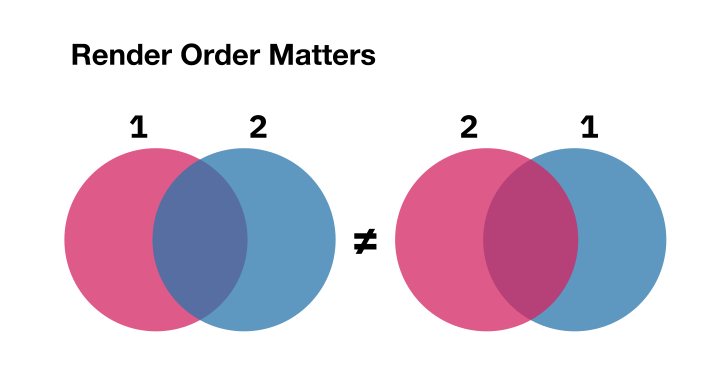

Lab 8: One Million Circles
Prologue: Logistics
Due Dates
For this lab, you’ll be turning in the following deliverables:
-
Checkpoint: Due Monday, November 4, 11:59pm (Gradescope)
-
Final Submission: Due Sunday, November 10, 11:59pm (Gradescope)
See the “Deliverables” section at the end of this document for more information on what you’ll be turning in.
Starter Code
You can get the starter code for this lab by cloning the lab repository:
Introduction
Congratulations – you’ve made it! You’ve reached the final lab of 6.S894.
In this lab, we’ll finally be using the GPU for its originally-intended purpose: graphics! 1 Our goal will be to implement a geometry renderer on the GPU, which…
-
…draws a collection of shapes on top of each other…
-
…in a specific order…
-
…with alpha transparency.
Concretely, the only shapes we’ll be rendering in this lab are circles. However, to render these circles, we’ll need to grapple with fundamental system design challenges which show up in a huge variety of real-world graphics workloads. For example, in a 3D game, the circles could be replaced with textured triangles; in a view synthesis application, the circles might be replaced with Gaussian splats. In any case, the fundamental principles would remain the same.
This lab will continue the theme of irregularity that we previously encountered in Lab 7. To make your renderer run fast, you will likely find that you need to use some of the same tricks you used in your run-length compression implementation.
This lab will be especially open-ended, and is an opportunity for you to exercise your creativity. After a semester of hard work, you’re now an experienced GPU programmer, and we hope you feel you’re well-prepared to design fast parallel algorithms yourself. We believe you are!
Implementation
This lab has only a single implementation goal: to write a fast circle renderer on the GPU. Our objective will be to render a very crowded scene containing one million circles, producing an image which looks like this:
An input scene for our renderer consists of a list of circles, where each circle is described by seven floating-point attributes:
-
The
xandycoordinates of the circle’s center, measured in pixels. -
The
radiusof the circle, measured in pixels. -
The
red,green, andbluechannels of the circle’s color, each expressed as a value between0.0to1.0. -
The
alphachannel of the circle’s color, determining its degree of opacity/transparency.
When a circle is drawn on top of some background pixels (to which other circles may have already previously been drawn), each underlying pixel’s color is updated according to the following formula:
pixel_red = pixel_red * (1 - alpha) + new_red * alpha;
pixel_green = pixel_green * (1 - alpha) + new_green * alpha;
pixel_blue = pixel_blue * (1 - alpha) + new_blue * alpha;
where new_red, new_green, new_blue are the color channels of the circle being drawn, and alpha is the circle’s alpha channel.
One consequence of using this formula for updating pixels is that the order in which circles are rendered matters. This is particularly clear in the case where alpha = 1, in which case the circle being drawn will completely overwrite its background. However, even when alpha < 1, the order in which circles are drawn still matters in the general case.

Circles should be drawn in order of ascending index. In the starter code, the function render_cpu provides an example of how to render the scene in a way which respects the intended draw order. Of course, the CPU reference implementation achieves this in the simplest way possible, by rendering each circle sequentially. Our goal will be to parallelize our circle rendering workload on the GPU, while maintaining the same output as the order-respecting CPU implementation.
This brings us to the main deliverable of the lab:
Deliverable: In the file
circle.cu, implement the functionlaunch_render, and any associated kernels, to match the output of the CPU reference implementation. Aim to achieve a run time of under40 mson the million-circle benchmark.
Any implementation which achieves a run time under 40 ms will receive full credit. However, if you’re looking for a challenge, we’ll award significant extra credit to implementations which can hit a more ambitious performance target:
Deliverable (optional, extra credit): Implement
launch_render, and any associated kernels, to achieve a run time of under16 mson the million-circle benchmark.
If you can render a scene in 16 ms, that means you could in principle render an animated version of the scene at a rate of 60 frames per second (FPS) – generally considered the standard for real-time interactive graphics.
In the sections below, we give some tips on how to use the starter code, and offer some high-level guidance on how you might go about designing your implementation.
Allocating Workspace Memory
If you want to allocate workspace memory for your implementation, you can use the memory_pool argument which is passed to your launch_render function. This memory_pool object provides a more flexible way of allocating GPU memory than we’ve used in previous labs.
You can allocate GPU memory from the memory_pool object using the memory_pool.alloc function:
size_t size_in_bytes = /* ... */;
float *my_buffer = reinterpret_cast<float *>;
You can call memory_pool.alloc as many times as you like in your code, and can call it at any point in the launch_render function.
You don’t need to (and shouldn’t) call cudaFree on the buffers returned by memory_pool.alloc. The benchmark harness in the starter code will take care of freeing any allocated GPU buffers for you when it’s done benchmarking your implementation.
The purpose of the memory_pool object is to minimize the number of cudaMalloc and cudaFree calls in the benchmarking loop. As long as, given a particular input scene, each call to your launch_render function always requests the same sequence of buffer sizes in the same order, the memory_pool object will only need to call cudaMalloc on the very first iteration of the benchmarking loop, and will be able to reuse the same allocated buffers on every subsequent iteration. If you’re curious how the GpuMemoryPool class works behind the scenes, we encourage you to look at the starter code; the implementation (which is split across multiple places in the file) is less than 100 lines in total.
Note that depending on your approach, you don’t necessarily need to use any workspace memory in your solution. For certain designs, however, it might be helpful.
Suggestions
When designing your implementation, you may find it helpful to consider the following questions:
-
Where in your implementation, if anywhere, should you parallelize over pixels?
-
Where in your implementation, if anywhere, should you parallelize over circles?
-
How can you minimize redundant work between CUDA threads?
-
How can you minimize redundant data loading?
-
How can you minimize redundant computation?
-
Can you use shared memory to somehow reuse data, or the results of computations, across all CUDA threads in a block? If so, what data, and the results of what computations?
-
-
Could using a scan be helpful anywhere in your implementation?
-
If you do use a scan, what granularity should it operate at? Should it be a single big scan across some array in global memory, or should it be many local scans within individual threadblocks? Or something else?
-
If you used a scan for something in your run-length compression implementation from Lab 7, can you think of any way it could serve a similar purpose here?
- In particular, can you use a scan for some kind of stream compaction?
-
We encourage you to take some time to try coming up with multiple completely different solution strategies; it’s easy to get stuck going deep in one direction, and sometimes the best move is to take a step back and try a different approach. There are a lot of different ways you can slice this problem – the solution is not uniquely-determined!
Questions
Once you’ve implemented your circle renderer, you can answer this lab’s single write-up question:
Question for final write-up: In a paragraph or two, can you describe the design you adopted for your circle renderer? Were there any alternative designs you considered? Where did you parallelize over circles, and where did you parallelize over pixels? What run time were you able to achieve on the million-circle benchmark? Did you encounter any interesting bugs along the way? Finally, optionally: can you think of any way you might be able to make your implementation faster?
Deliverables
Checkpoint (Due Monday, November 4, 2024)
For the checkpoint for this lab, we ask that you start thinking about possible designs for your solution. Don’t worry if you get stuck; we’ll have a chance to discuss solution strategies as a group during live lab.
Optionally: If you can, we also encourage you to try starting on the code for your implementation. However, we understand you may not be able to in time for the checkpoint.
On the Gradescope assignment “Lab 8 Checkpoint,” (link) submit your answers to the prompts checking in about how you’re doing with the lab.
Final Submission (Due Sunday, November 10, 2024)
On the Gradescope assignment “Lab 8 Final,” (link) submit your completed code for circles.cu. Additionally, submit a write-up in PDF format containing your answer to the single question in the lab.
Acknowledgments
The course staff would like to extend a big thanks to Stanford’s CS149: Parallel Computing for providing the inspiration for this assignment, and to Kayvon Fatahalian for answering our questions about that original assignment’s design.
Most real-world graphics workloads on NVIDIA GPUs aren’t actually built on top of CUDA, and instead access the GPU through separate software interfaces like Vulkan which are specialized for graphics. However, the same underlying system design and performance engineering principles apply to both methods of programming the GPU, and in this lab, CUDA will be good enough for our purposes.